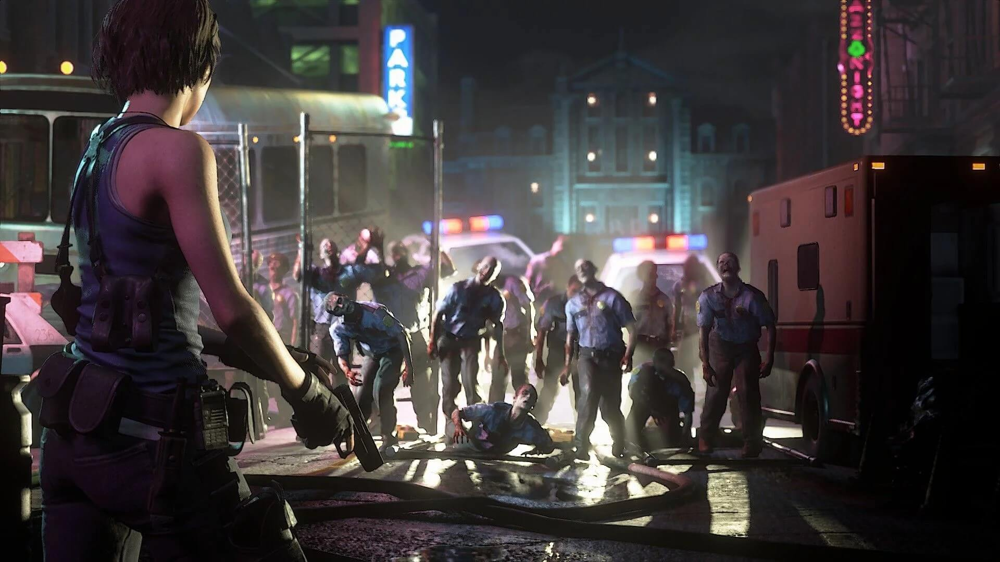

 Resident Evil 3: Nemesis is a survival horror video game developed and published by Capcom in 1999. The game follows Jill Valentine, a former member of the elite police task force S.T.A.R.S. as she tries to escape the zombie-infested Raccoon City.
The story begins 24 hours before the events of Resident Evil 2, as Jill attempts to leave the city after resigning from S.T.A.R.S. As she makes her way through the streets, she encounters hordes of zombies and other bio-organic weapons (BOWs) created by the nefarious Umbrella Corporation.
Jill soon learns that she is being pursued by an intelligent BOW known as Nemesis, which has been programmed to hunt down and kill all remaining S.T.A.R.S. members. Nemesis relentlessly pursues Jill throughout the game, adding an element of tension and fear to the already terrifying gameplay.
As Jill fights her way through the city, she meets other survivors, including a mercenary named Carlos Oliveira and a journalist named Dario Rosso. Together, they uncover the extent of Umbrella's involvement in the outbreak and the true purpose of Nemesis.
The game features multiple endings, depending on the player's choices and actions throughout the game. In the end, Jill and Carlos must fight their way through a laboratory complex to confront the mastermind behind the outbreak, Dr. William Birkin. Depending on the player's actions, the game can end with either Jill escaping the city via helicopter or with Carlos sacrificing himself to save Jill.
Resident Evil 3: Nemesis is widely regarded as one of the best survival horror games ever made, thanks to its intense gameplay, compelling story, and iconic villain.